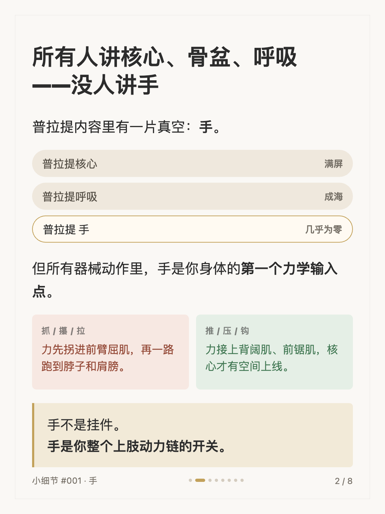
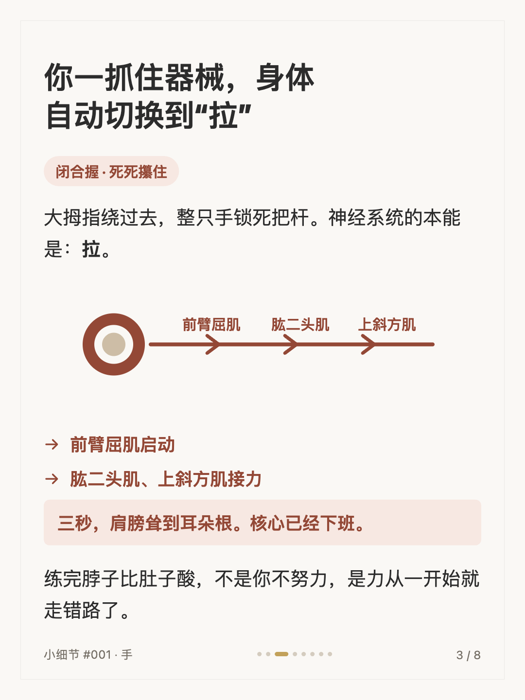
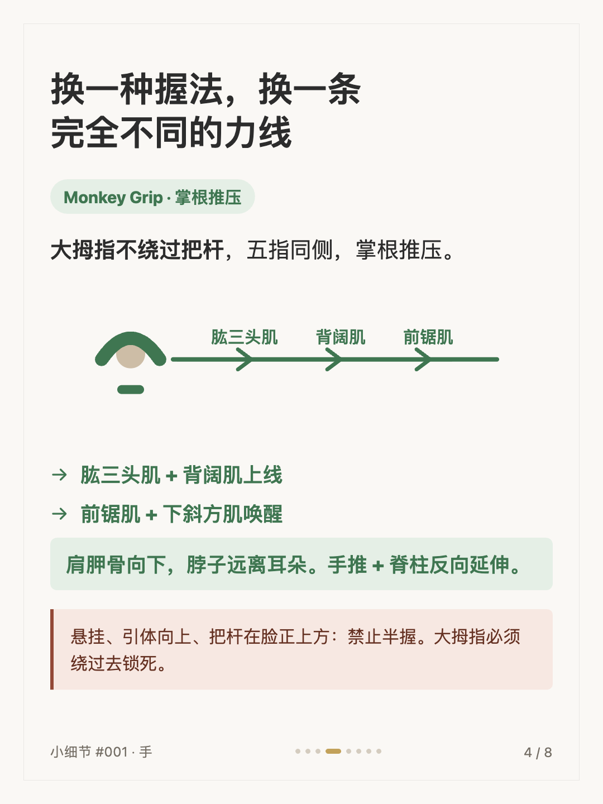
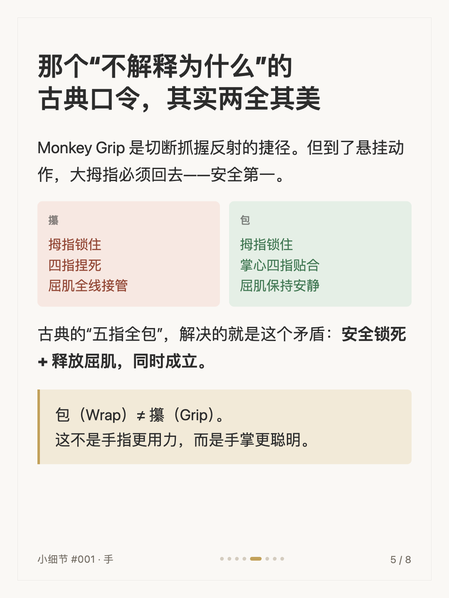
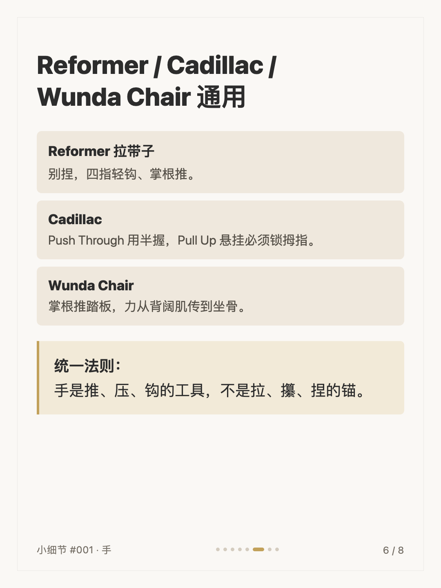
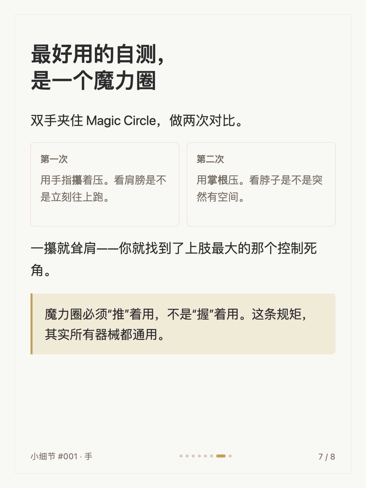
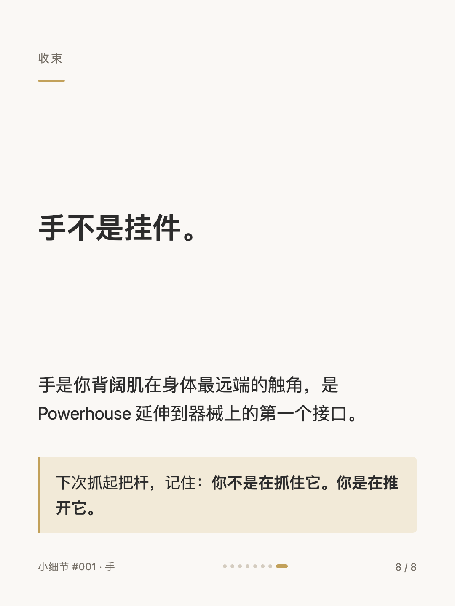

普拉提小细节 #001
手：最被低估的关节

1 / 8

2 / 8

3 / 8

4 / 8

5 / 8

6 / 8

7 / 8

8 / 8
← 左右滑动浏览全部卡片 →
所有人讲核心、骨盆、呼吸——没人讲手。但器械动作里，手是身体的第一个力学输入点：死死攥住把杆，力先拐进前臂屈肌，一路跑到脖子和肩膀；换成掌根推压，背阔肌、前锯肌上线，核心才有空间接力。
这组卡片拆解了握法如何决定整条力线：Monkey Grip、古典“五指全包”与悬挂动作的安全边界，以及一个用魔力圈就能做的自测。